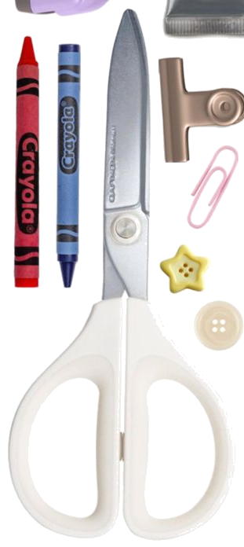
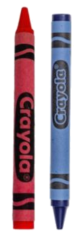
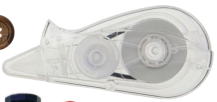
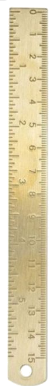
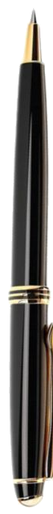
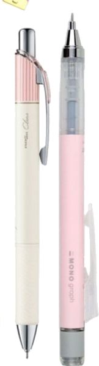
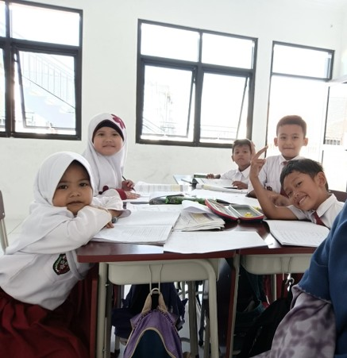
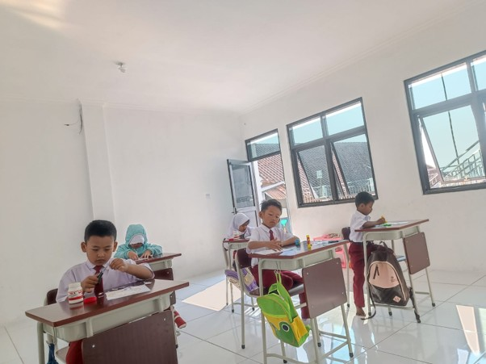
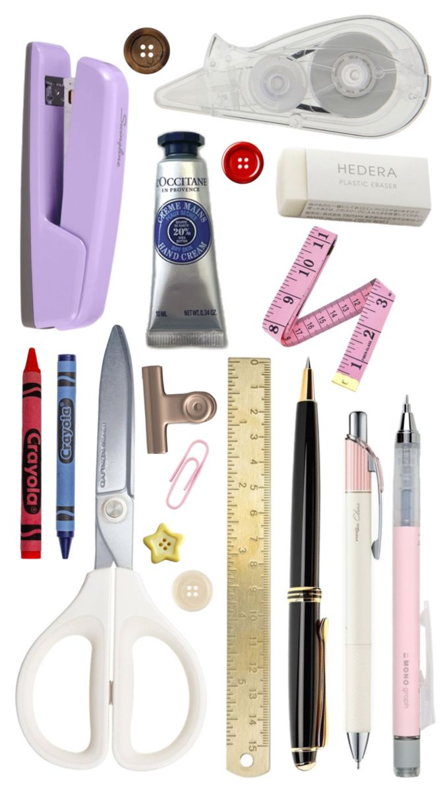
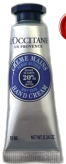

SDTQ ATTAMAM hadir dengan konsep Full Day School berafiliasi resmi ke Dinas Pendidikan. Menyelenggarakan pendidikan islami yang memadukan Aqidah Sohihah, Adab Hasanah, dan Hafalan Al-Qur'an di bawah sejuknya alam Cipanas Garut.

Saya takut anak saya pintar tapi tak punya adab. Saya takut dia sukses, tapi kosong jiwanya. Karena itu saya cari sekolah yang pertama-tama ngajarin dia jadi manusia yang tahu arah. Di Attamam, anak-anak diajarin wudhu yang benar, cara menjawab salam, adab ke guru, hingga cara duduk waktu belajar. Kalau iman dan adabnya kuat dari kecil, insyaAllah dia bisa bertahan dalam hidup.

Target Hafalan Minimal Al-Qur'an Santri Lulusan SDTQ
Hafalan Hadits Pilihan & Pembiasaan Doa/Dzikir Harian
Penanaman Aqidah Sohihah & Adab Hasanah Keseharian
Konsep Pembelajaran Kondusif di Objek Wisata Cipanas


Pembentukan Aqidah Sohihah sejak dini agar anak memiliki pegangan hidup yang lurus dan kecintaan mendalam kepada Allah SWT.
Penanaman sopan santun, penghormatan kepada guru dan orang tua, wudhu yang syar'i, serta kesantunan berinteraksi sesama teman.
Perpaduan hafalan Al-Qur'an 4 Juz, hafalan 100 hadits pilihan, serta penguasaan akademik dasar membaca, menulis, dan berhitung.

Santri diajarkan wudhu yang benar, tata cara menjawab salam, serta adab kebersamaan sejak hari pertama sekolah.

Penyelenggaraan kelas dengan jumlah siswa terkontrol agar pembimbingan hafalan Al-Qur'an berlangsung optimal.

Koleksi perlengkapan belajar asli yang menyenangkan untuk menumbuhkan minat belajar dan merawat kerapihan santri.
Sekolah Dasar Tahfidz Qur’an (SDTQ) ATTAMAM berada di bawah naungan Yayasan ATTAMAM, hadir dengan konsep Full Day School. Kurikulum menekankan pada tahfidz Qur’an, dipadukan dengan al-‘ulumul Fardhu ‘Ain (Pendidikan Agama Islam) dan al-‘ulumul Fardhu Kifayah (Mata pelajaran umum Dinas Pendidikan).
Membimbing dan mengarahkan visi pendidikan karakter berbasis nilai-nilai Al-Qur'an dan Sunnah.

Mari menjadi bagian dari keluarga besar Sekolah Dasar Tahfidz Qur’an ATTAMAM Garut.